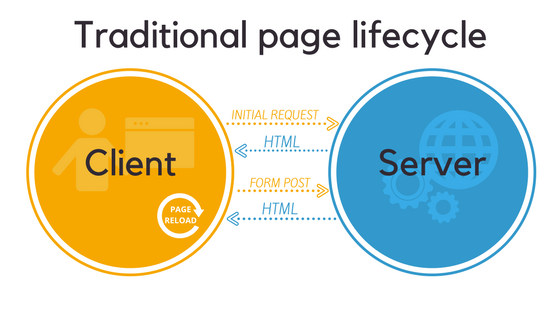
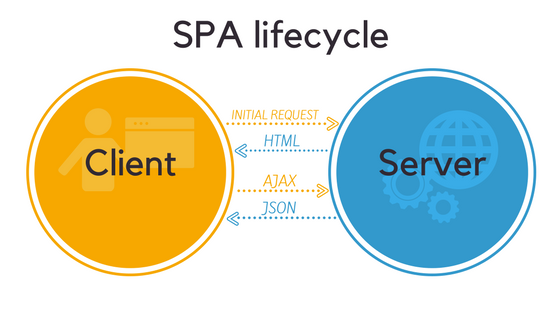
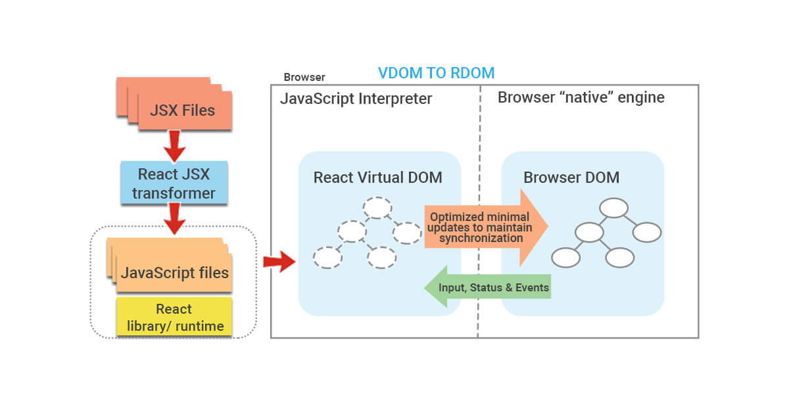
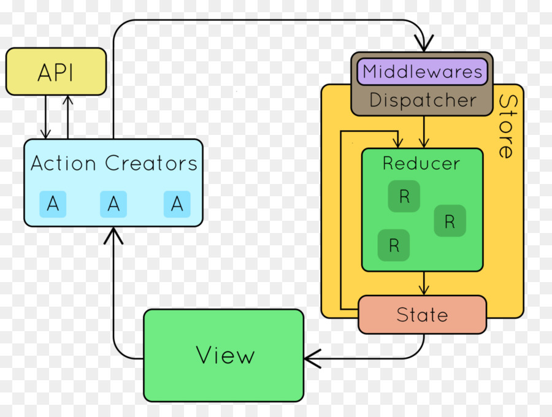

What’s in it for you?
There is some topics about react js:
- Intro
- SPA vs MPA
- Angular vs React vs vue
- React Config
- React and Redux Architecture
- Example project
- Future of React
After this session, we have to know why we would rather select react js as our Frontend tech stack than other technologies.
Intro
A JavaScript library for building user interfaces
React in a glance:
- Declarative views make your code more predictable and easier to debug.
- Build encapsulated Component that manage their own state, then compose them to make complex UIs.
- Learn Once, Write Anywhere. We don’t make assumptions about the rest of your technology stack, so you can develop new features in React without rewriting existing code.
- React can also render on the server using Node and power mobile apps using React Native.
Overview Mode
We Want to know,
- What is React
- Why React
- Feature of React
- React Pre-requisites
- Industry Trends
- What is Component, State and props
Defining A Blade Layout
In general, tight coupling is usually not good.
<html>
<body>
@section('sidebar')
This is the master sidebar.
@show
<body class="container">
@yield('content')
</div>
</body>
</html>
We can see more details here (laravel) and here (jsf)
SPA vs MPA
1th What’s the difference?
2th Advantages of SPAs
3th SPA Drawbacks (and how to fix them)
4th So what’s the verdict?
What’s the difference?


Advantages of SPAs:
- 1. Fast and smooth UX
- 2. Local caching and offline functionality
- 3. Perfect Mobile Adaptability
- 4. API reuse
- 5. Streamlined development
- 6. Back-end/front-end separation
- 7. Painless Chrome debugging
SPA Drawbacks (and how to fix them)
- 1. SEO issues
- 2. Memory leaks
- 3. Security issues
- 4. Slow first load
- 5. Limited functionality with JavaScript disabled
- 6. Poor app scalability
- 7. Navigation issues
- 8. Weird behavior due to asynchronous requests
Industry Trends
Which one ?
Angular
vs
React
vs
vue
Angularjs, Ember, PReact, backbone, Vanilla, Meteor, Svelte, ... .
- Popularity....
- Community...
- Maintainer...
- Used by...
- Job market...
- Google trends...
- Stackoverflow trends...
- Downloads...
- Learning...
- Migration...
- Mobile version...
React Config
- With Starter
- Such as: Create React App, Next.js, Gatsby, Neutrino, Nx, Parcel, Razzle, React Starter Kit, react-boilerplate
- Manual Config
- We need: A package manager, A bundler, A compiler.
- without dev-server
- No JSX, NO ES6.
Creating React App From Scratch
- Initial npm
- Intall React and ReactDOM
- Config webpack, Babel, HMR, Eslint, Prettier
Live Demo

How to Render React DOM
What is Virtual DOM

why Redux

Redux Flow
Future of React
- OCamel
- OCaml is an industrial strength programming language supporting functional, imperative and object-oriented styles
- ReasonML
- Reason lets you write simple, fast and quality type safe code while leveraging both the JavaScript & OCaml ecosystems.
- Svelte
- Svelte is a radical new approach to building user interfaces.
Whereas traditional frameworks like React and Vue do the bulk of their
work in the browser, Svelte shifts that work into a compile step that
happens when you build your app.
Instead of using techniques like virtual DOM diffing, Svelte writes code that surgically updates the DOM when the state of your app changes.